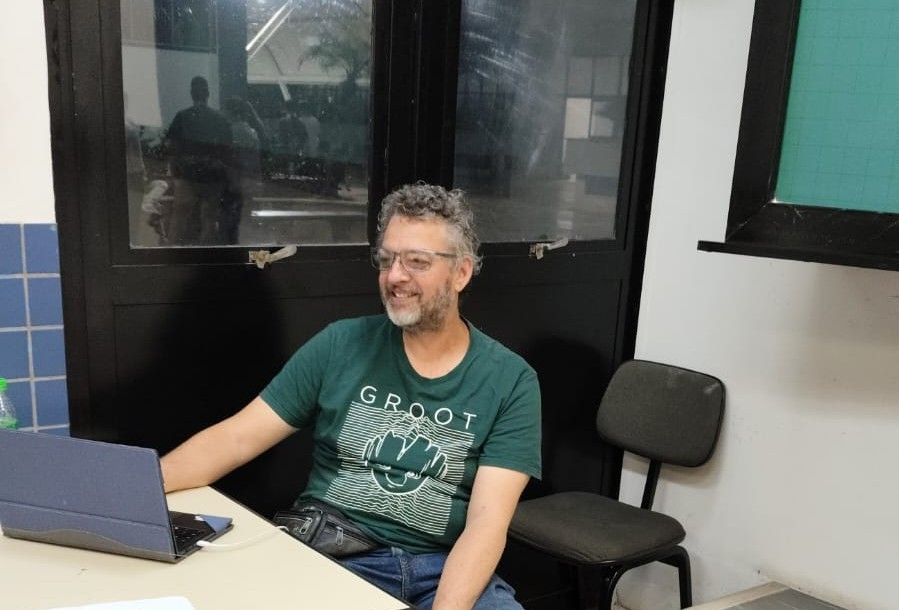
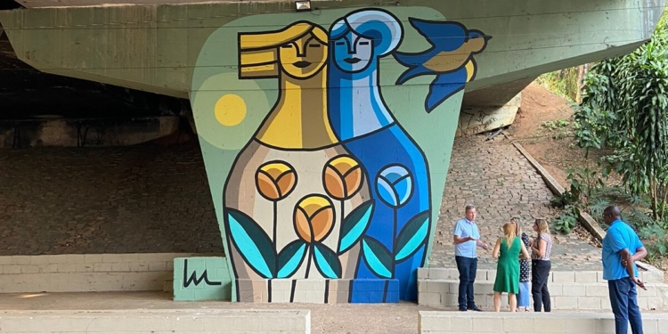

Últimas Notícias

A influência da Inteligência Artificial no Design Gráfico
A Inteligência Artificial está redefinindo o papel do designer, automatizando processos e ampliando possibilidades criativas.

Entrevista com Darci Campioti
Uma análise sobre as transformações no mercado e a importância da criatividade humana diante das novas tecnologias.

Grafites e murais transformam Campinas
O edital Campinas Arte Urbana fortalece artistas locais e transforma espaços públicos em galerias a céu aberto.
A influência da Inteligência Artificial no Design Gráfico
A Inteligência Artificial está transformando processos criativos, otimizando tarefas e redefinindo o papel do designer.
Hoje, muito do design gráfico já parece padronizado e repetitivo. Capas, posts e identidades visuais seguem fórmulas prontas.
Assim como textos gerados por IA, parte do design atual apenas reproduz padrões já existentes.
A IA não elimina o designer. Ela exige mais repertório, pensamento estratégico e ousadia criativa.
Entrevista com Darci Campioti
Em entrevista exclusiva, Darci destacou que a tecnologia amplia possibilidades, mas o diferencial continua sendo humano.
Criatividade, repertório e pensamento crítico são essenciais para o profissional que deseja se manter relevante.
Design Gráfico: mercado e o
O designer gráfico pode atuar em agências, empresas, como freelancer ou empreendedor.
O mercado exige atualização constante e domínio de ferramentas digitais.
O crescimento do uso de IA no setor mostra que adaptação é parte essencial da profissão.
Grafites e murais em Campinas
O edital "Campinas Arte Urbana" transformou espaços públicos com grafite e muralismo.
A iniciativa fortalece artistas locais e aproxima a população da arte urbana.